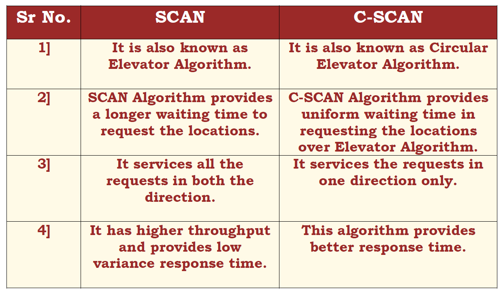

DISK SCHEDULING
Experiment Number 4 : C-SCAN
Theory :
The circular SCAN (C-SCAN) scheduling algorithm is a modified version of the SCAN disk scheduling algorithm that deals with the inefficiency of the SCAN algorithm by servicing the requests more uniformly.
Characteristics of C-SCAN :
The head moves from one end servicing all the requests to the other end & later , as soon as the head reaches the other end, it immediately returns to the beginning of the disk without servicing any requests on the return trip and starts servicing again once reaches the beginning.
Advantages of C-SCAN :
It provides better response time and uniform waiting time.
Works well with moderate to heavy loads.
Disadvantages of C-SCAN :
May not be fair to service requests for tracks at the extreme end.
It has more seek movements as compared to the SCAN Algorithm.
To know the difference between SCAN & C-SCAN :
